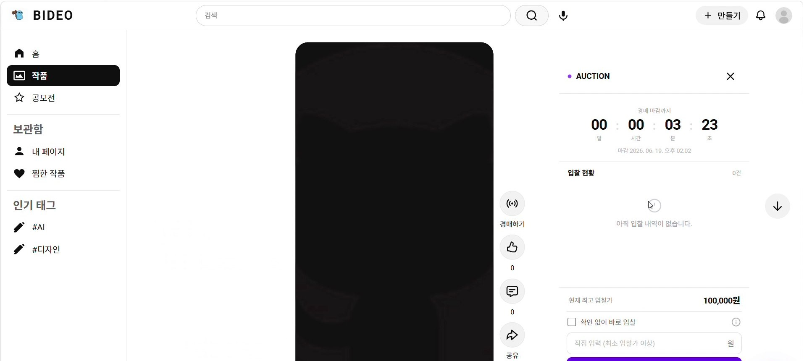

백엔드 기능
- 작품·예술관 CRUD와 조회 흐름
- 경매 입찰·종료·낙찰 처리
- Bootpay 결제 검증과 중복 결제 방지
- AWS S3 작품 이미지·파일 저장
영상 기반 작품 큐레이션·전시·오픈마켓 플랫폼입니다. 작품과 예술관 관리, 경매·결제, S3 저장 위에 LLM·RAG-Anything·멀티모달 생성·예측·추천 기능을 FastAPI로 분리해 서비스 흐름에 연결했습니다.

작품·예술관 관리에서 경매, 결제 검증, 파일 저장까지 주요 흐름을 Spring Boot 중심으로 구현했습니다. AI 기능 구현에는 생성형 AI 도구와 기존 모델을 활용했지만, 입력 데이터·모델 목적·FastAPI 요청/응답 계약·Spring Boot 연결 로직을 검토하고 이해했습니다.
AI가 생성한 결과를 그대로 나열하지 않고 문서 분석, 생성·검색, 예측, 추천, 소유권 검증의 목적을 구분했습니다. 입력 데이터 → 모델 실행 → FastAPI 응답 → Spring Boot 사용자 기능으로 이어지는 흐름과 실패 지점을 설명할 수 있습니다.
문서와 이미지가 섞인 자료를 분석해 투자 대비 성과 정보를 검색·정리하는 흐름입니다.
DOCUMENT AI · RAGGenerative Search와 Context-Aware Retrieval로 작품 맥락을 찾고 답변 생성에 연결합니다.
LLM · RETRIEVAL · GENERATION텍스트와 이미지 정보를 함께 활용해 작품 이미지 생성 기능으로 확장했습니다.
MULTIMODAL GENERATIVE AIDWT-DCT 주파수 변환 워터마킹으로 작품 이미지의 소유권 검증 기능을 구성했습니다.
IMAGE WATERMARKINGRandomForest를 이용해 작품 사전 조회수와 실시간 경매 낙찰 가능성을 예측합니다.
RANDOM FOREST고객 활동 데이터를 입력으로 LinearRegression 기반 팔로워 수 예측을 구성했습니다.
LINEAR REGRESSIONKiwi 형태소 분석과 벡터 유사도를 활용해 고객 활동에 맞는 작가를 추천합니다.
KIWI · VECTOR SIMILARITYTF-IDF와 벡터 유사도로 작품·예술관 특징을 비교해 적합한 예술관을 연결합니다.
TF-IDF · MATCHINGDB 잠금과 낙찰 데이터 제약조건을 이용해 동시에 들어오는 입찰과 경매 종료 시점의 데이터 충돌을 줄였습니다.
클라이언트 결과를 그대로 신뢰하지 않고 결제사 영수증을 서버에서 재검증하고 처리 이력을 관리했습니다.
작품 등록 흐름과 S3 저장을 연결하고 파일 경로와 DB 메타데이터를 함께 관리했습니다.
모델 학습과 추론은 Python/FastAPI로 분리하고, 핵심 서비스는 Spring Boot가 API로 호출하도록 구성했습니다.